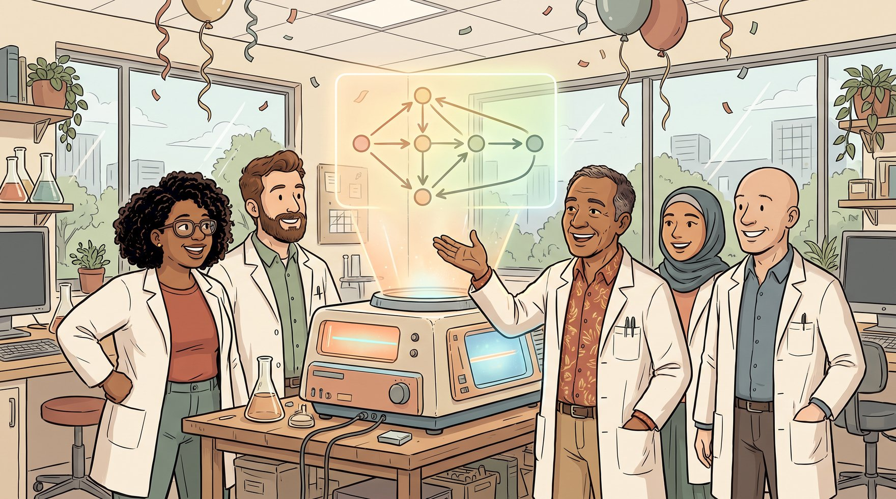
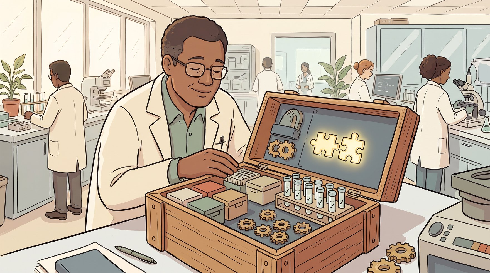
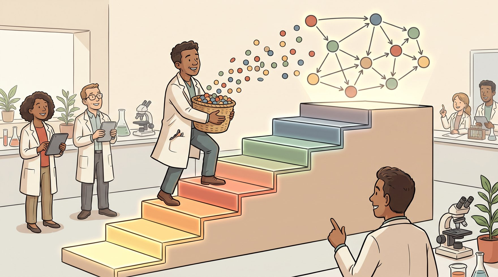
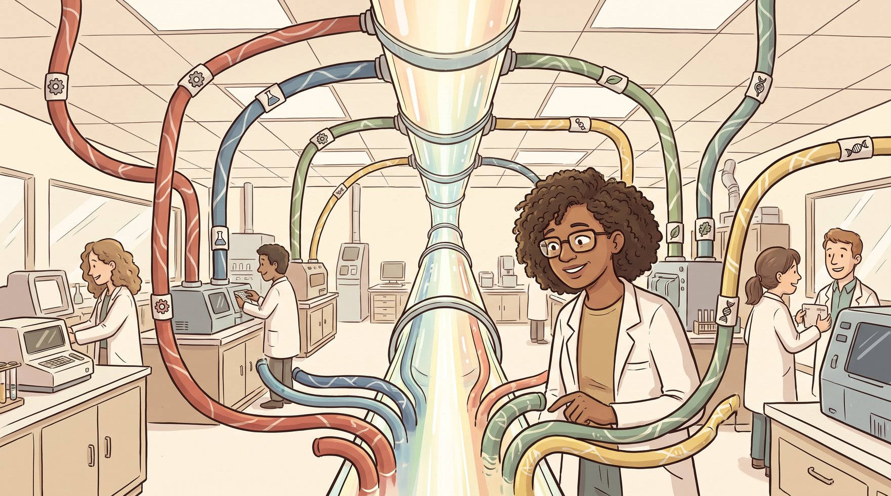
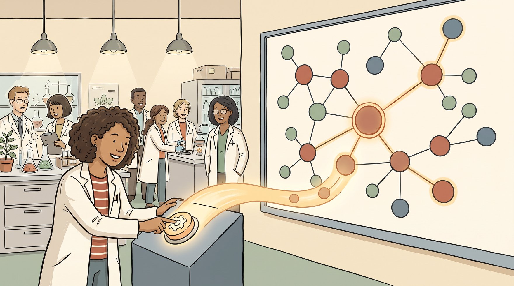
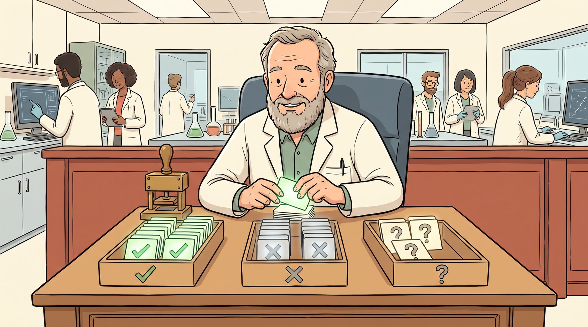
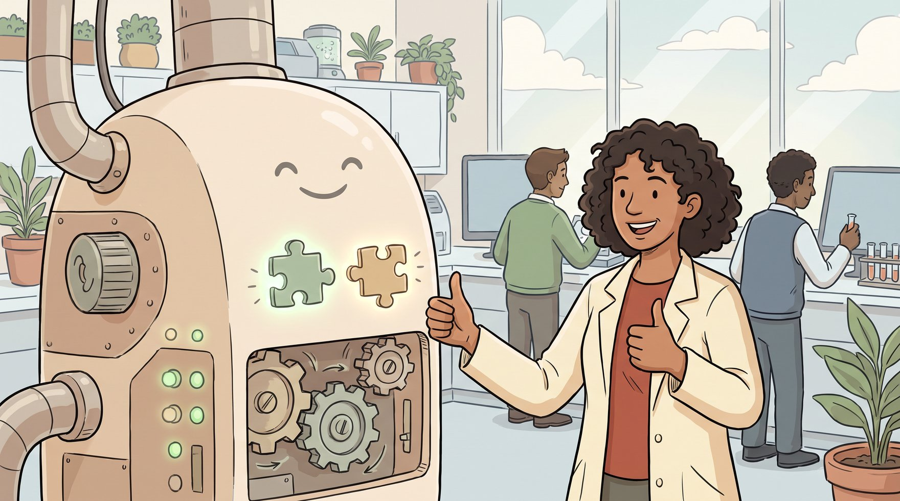
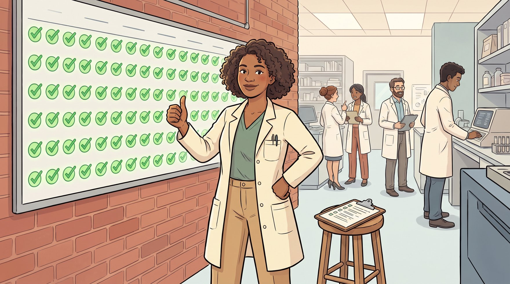
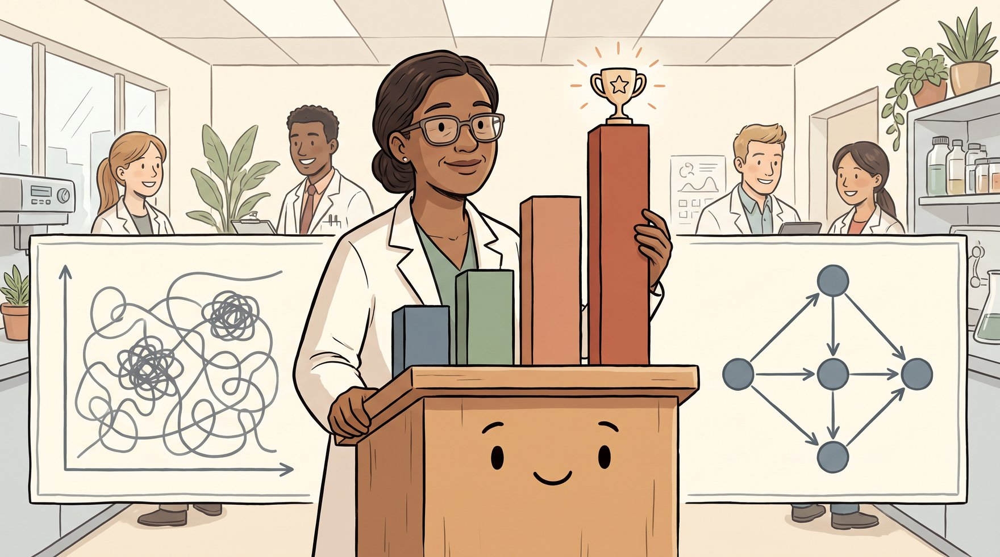
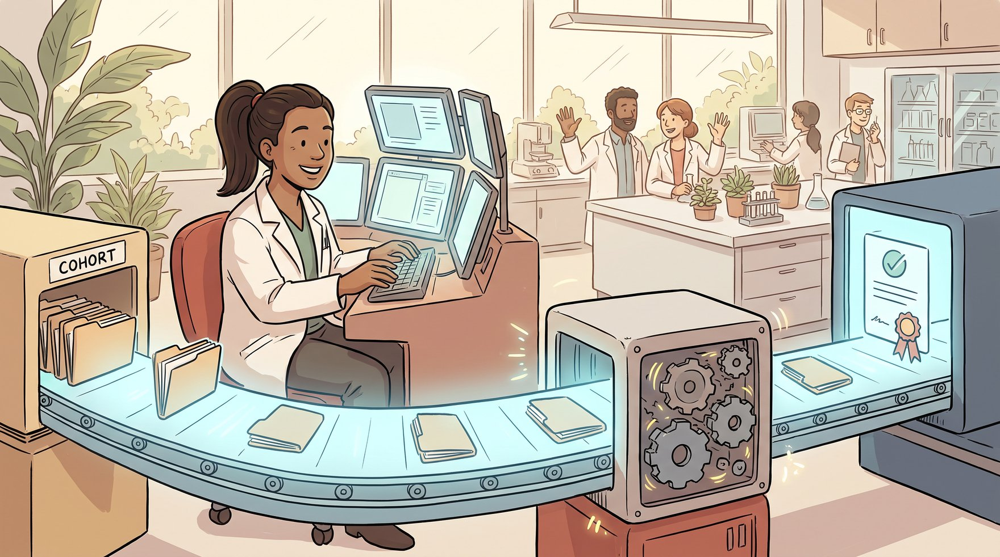

An Illustrated Guide · How the Engine Was Built and How to Run It · 10 Questions

Inside the runnable BiRAGAS causal engine: how ten evidence modules wire into one machine that discovers cause from correlation, simulates interventions, refutes and abstains, and issues a per-target causal verdict, with 34 tests and a benchmark to prove it.
BiRAGAS · Deployed Causal Engine Field Guide▲ Contents
Watch the film
The Causal Engine — An Illustrated Film
All twenty questions, animated and narrated · 6 min 36 s
BiRAGAS · Deployed Causal Engine Field Guide▲ Contents
THE PACKAGE
Q1
What exactly is the deployed causal engine?

HOW BIRAGAS HELPS
A runnable, integrated engine that turns BiRAGAS discovery from correlation-seeded into genuinely causal. It ships as engine code, real adapters for every module, verified integration patches, a JSON config, 34 automated tests, a benchmark, and a deployment guide. It replaces the |r|>0.50 seeding and the hand-set 0.70 weight, keeps the excellent AIPW estimator, and adds a structural model, refutation and honest abstention.
WHAT IT IS
A runnable causal engine
REPLACES
Correlation seeding
KEEPS
The AIPW estimator
SHIPS WITH
34 tests, benchmark, patches
3
BiRAGAS · Deployed Causal Engine Field Guide▲ Contents
THE ARCHITECTURE
Q2
What are the seven stages, end to end?

HOW BIRAGAS HELPS
Ingest every source onto one scale; build a conditional-independence skeleton; run the discovery ensemble over bootstraps for stability; anchor and orient with interventional data; prune with CI, FCI and stability; fuse into a calibrated per-edge posterior; then estimate, refute and abstain to a per-edge verdict. Scattered signals enter; a certified causal DAG comes out.
STAGES
7 (ingest to verdict)
ENTRY
Ten evidence sources
EXIT
A certified causal DAG
UNCHANGED
The gold-standard estimator
4
BiRAGAS · Deployed Causal Engine Field Guide▲ Contents
THE EVIDENCE BUS
Q3
How do ten modules feed one engine?

HOW BIRAGAS HELPS
One assembler reads all ten from named data keys, each on a common scale. Seven are edge-level (CRISPR-IV, L1000, MR, SIGNOR, DoRothEA, Granger, ensemble); three are node-level driver signals (DepMap, MAGeCK, PROGENy). Populate any subset; missing sources degrade gracefully and are never fabricated.
EDGE MODULES
7 sources
NODE MODULES
3 driver signals
CONTRACT
One data key each
RULE
Missing degrades, never fabricated
5
BiRAGAS · Deployed Causal Engine Field Guide▲ Contents
DISCOVERY
Q4
How does it find real causal edges, not correlations?
HOW BIRAGAS HELPS
Membership becomes a conditional-independence question, so a correlation running entirely through a confounder is removed. Then bootstrap stability selection keeps only the edges that recur across resamples, with a finite false-edge bound, replacing the guessed 0.70 weight with a guarantee. A kernel test option handles nonlinear signal.
SKELETON
CI test: Fisher-Z or KCI
STABILITY
Bootstrap, bounded false edges
REPLACES
|r|>0.50 and the x0.70 weight
RESULT
Confounded edges pruned
6
BiRAGAS · Deployed Causal Engine Field Guide▲ Contents
INTERVENTION
Q5
How does it simulate inhibiting a target?

HOW BIRAGAS HELPS
A structural causal model is fit on the certified graph, one equation per gene from its parents, so the engine answers do(X=x): clamp the target, propagate through the fitted equations, and read the effect on the disease program, with counterfactuals for individual profiles. This replaces the old linear path-flow that could never express a real intervention.
MODEL
Fitted structural causal model
OPERATOR
do(inhibit this target)
ALSO
Counterfactuals per profile
REPLACES
Linear Phase-4 flow
7
BiRAGAS · Deployed Causal Engine Field Guide▲ Contents
THE VERDICT
Q6
How does it refute claims and stay honest?

HOW BIRAGAS HELPS
Every effect is stress-tested with a placebo (permute the treatment and a real effect vanishes) and bootstrap sign-stability (a stable sign with a confidence interval excluding zero). Edges under latent confounding are declared not identified rather than reported. The pipeline closes with an honest per-edge verdict.
TESTS
Placebo + bootstrap stability
ABSTAINS ON
Latent confounding
VERDICT
CAUSAL / REFUTED / NOT_IDENTIFIED
STANDARD
Report only what survives
8
BiRAGAS · Deployed Causal Engine Field Guide▲ Contents
DEPLOYMENT
Q7
How does it wire into the live platform?

HOW BIRAGAS HELPS
Two small, verified patches make the live graph builder decide membership by conditional independence and re-score by the fusion posterior; the heavy logic lives in a new module, so the production diff stays tiny and reversible behind config flags. The patches are generated from, and dry-run-applied to, the real source. A re-wiring, not a rewrite.
CHANGE
2 minimal, verified patches
RISK
Config-gated and reversible
PROOF
Dry-run apply to real source
KEEPS
The estimator untouched
9
BiRAGAS · Deployed Causal Engine Field Guide▲ Contents
TESTING
Q8
How do we know it works?

HOW BIRAGAS HELPS
Thirty-four automated tests, seven smoke and twenty-seven integration, cover every module, the patch glue, the full config wiring, the node covariates, refutation, abstention and the end-to-end pipeline. Two real bugs were caught by these tests during the build: an invalid kernel-independence null and a silent orientation fallback, both fixed.
TESTS
34: 7 smoke + 27 integration
COVERS
Every module and the full pipeline
BUGS CAUGHT
2, both fixed
STATE
All passing
10
BiRAGAS · Deployed Causal Engine Field Guide▲ Contents
THE BENCHMARK
Q9
How well does it recover causal structure?

HOW BIRAGAS HELPS
On a known ground-truth network the correlation rule scores F1 0.485 with 17 structural errors; the engine recovers the exact skeleton (F1 1.0, 2 errors), and a perfect causal graph with zero errors once one interventional anchor is supplied. Correlation, to exact skeleton, to perfect DAG. The pipeline also refutes spurious edges.
BASELINE
Correlation: F1 0.485, SHD 17
ENGINE
F1 1.0, SHD 2
+ ONE ANCHOR
SHD 0 (perfect DAG)
ALSO
Refutes spurious edges
11
BiRAGAS · Deployed Causal Engine Field Guide▲ Contents
RUNNING IT
Q10
How do I run the full chain?

HOW BIRAGAS HELPS
Point the engine at your cohort expression and any module data, and one call runs discovery, model fitting, estimation, refutation and abstention to per-edge verdicts. Apply the two patches, set the config, populate the data keys, and validate with the tests and benchmark before a live run. Every claim traces to file and line; simulated data is labeled; nothing is fabricated.